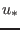
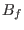
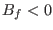
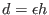
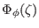

Next: Printing GOTM library version Up: Module kpp: the KPP-turbulence Previous: Compute turbulence in the Contents
INTERFACE:
subroutine wscale(Bfsfc,u_taus,d,wm,ws)DESCRIPTION:
This routine computes the turbulent velocity scale for momentum and tracer as a function of the turbulent friction velocity, , the "limited" distance, lim, and the total buoyancy flux, , according to
In unstable situations, , the scale lim corresponds to the distance from surface or bottom only until it reaches the end of the surface (or bottom) layer at . Then it stays constant at this maximum value.
The different functional forms of  for unstable flows are discussed in Large et al. (1994).
USES:
IMPLICIT NONEINPUT PARAMETERS:
buoyancy flux (m^2/s^3) REALTYPE, intent(in) :: Bfsfc friction velocity (m/s) REALTYPE, intent(in) :: u_taus (limited) distance (m) REALTYPE, intent(in) :: dOUTPUT PARAMETERS:
velocity scale (m/s) for momentum and tracer REALTYPE, intent(out) :: wm, wsREVISION HISTORY:
Original author(s): Lars Umlauf